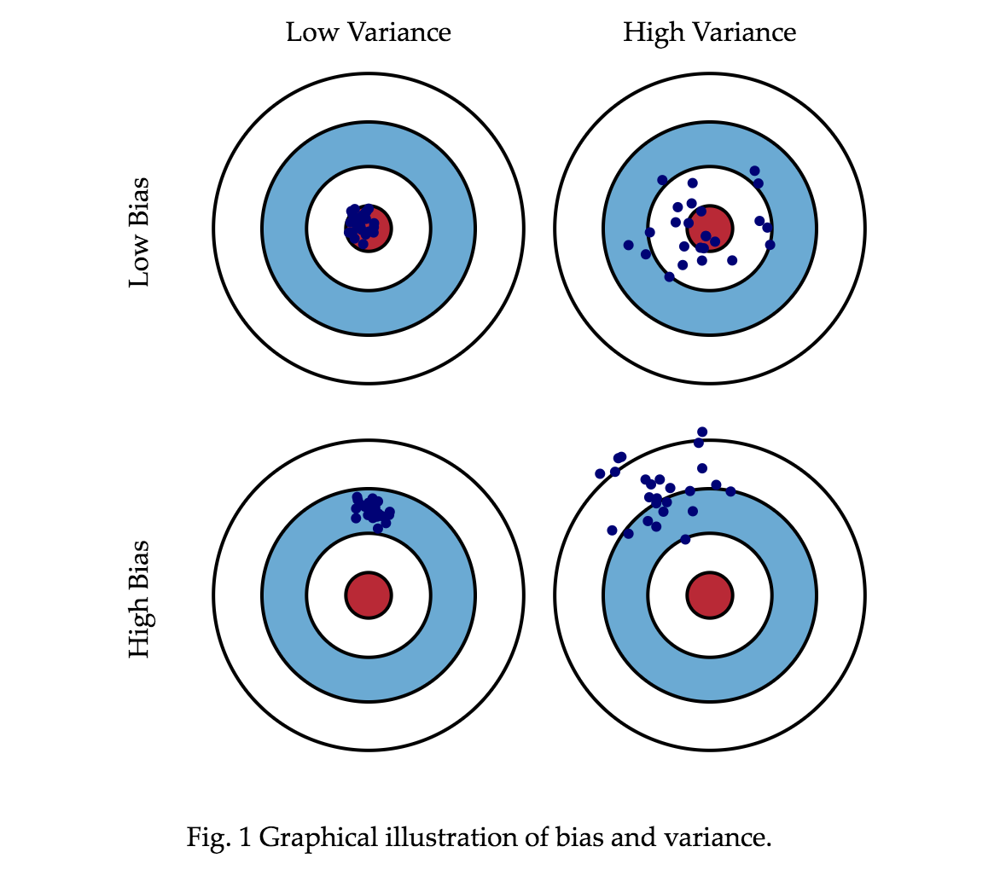
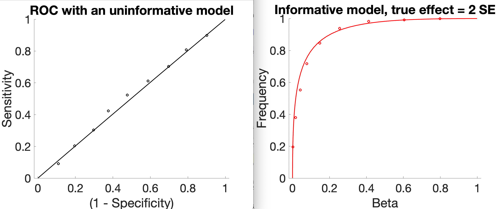
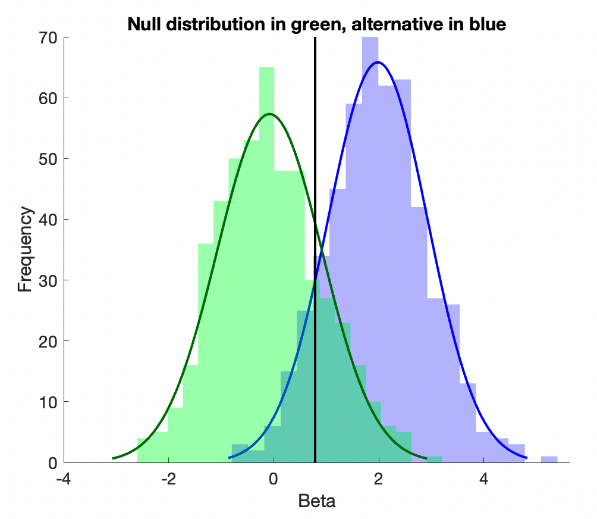
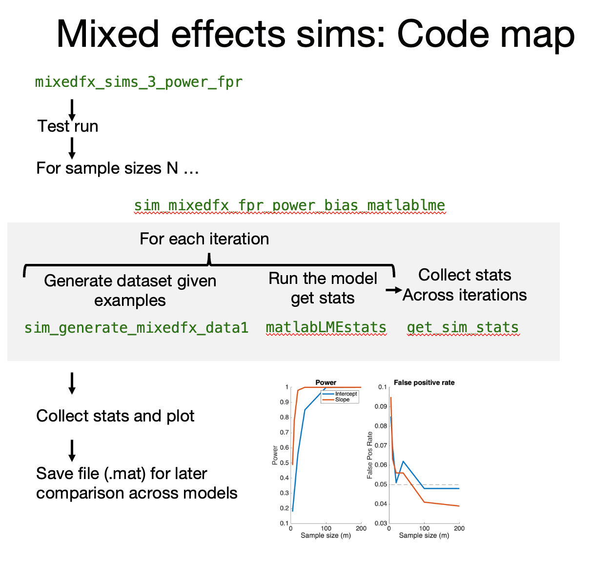

Mixed effects simulations#
Why simulation?#
If you create a new model or code, how do you know that your equations and calculations are correct? Moreover, most models use statistics that make assumptions and often hold for large-sample approximations. They may or may not perform poorly under some data conditions.
How do you know whether a model and/or code works as expected?
Simulations are an important way to validate a model and/or code implementation.
They are common in computational process models and dynamic models where it’s not always clear whether parameters are identified and how the system will respond to various types of inputs. But they are also very useful with more complex forms of linear models.
Simulations are the only way to test a model’s ability to perform as expected, because only in simulations do you know the ground truth.
Bias, variance, and parameter recovery#
Some important things to test are:
Bias: Does a model recover the true parameter estimates on average? That is, is \(E(\hat\beta)=\beta\)?
Variance: How precise are the model’s estimates across replications? Precision is the reciprocal (inverse) of variance, so we are interested in comparing \(E(var(\hat\beta))\) across models. Models with lower average variance have lower expected variance and are preferred.
These quantities are central to parameter recovery, the ability of a model to accurately estimate a set of ground truth parameters on average. For example, a model’s identifiability refers to the ability to uniquely estimate parameters based on the data. A model is identifiable if no two different parameter values or sets of parameter values result in the same predicted values, or are otherwise equally likely given the data.
A non-identified model will have infinite variance. (In simulations, this will manifest as very large average variance estimates, or errors such as “Matrix cannot be inverted” in some models).
Bias and variance trade off: Models that produce unbiased estimates are often subject to high variance, particularly when many combinations of parameter estimates can yield similar model fits and likelihoods. e.g., if a model has highly correlated (but identifiable) parameters, it is unbiased but high-variance. If a model under-estimates a true parameter estimate, but does so very consistently across samples, it is biased but low-variance.

Power and false positive rates (FPR)#
In the context of inference, power and FPR are arguably the most important aspects of a model’s performance to test.
Power is the model’s sensitivity to true effects, \(P(reject | \beta \neq 0)\). It is defined in classical test theory as \( 1 - \beta \), where \(\beta\) is the Type II error rate or “miss” rate. (This is NOT the same \(\beta\) as in GLM!)
FPR is the model’s likelihood of generating a falsely significant test of a parameter (or combination) if the true value is 0, \(P(reject | \beta = 0)\), referred to as \(\alpha\) in test theory. As we normally specify an acceptable \(\alpha\) in an inferential test (e.g., P < 0.05), we’d like to know that a model’s observed \(\alpha\) is consistent with our assumptions. This is equivalent to 1 - specificity. This is related to coverage, how likely it is that the true parameter value lies within the estimated confidence interval (or credible interval, in a Bayesian context). For example, we’d like to know that a 95% confidence interval actually covers the true parameter value 95% of the time.
Power is sensitive to the true effect size and sample size, and so are often simulated across a range of these. FPR shouldn’t be sensitive to these, but some tests may perform differently with (e.g., small samples).
Like bias and variance, power and FPR trade off. A liberal test will nearly always yield a significant result, but at a cost in high FPR. In the extreme, all tests are significant, and power = 1, FPR = 0. A conservative test will rarely yield a significant result, but FPR will also be low. In the extreme, no tests are significant, and power = 0, FPR = 1. These extreme points define the anchors of the Receiver Operating Characteristic (ROC) curve. The ROC curve describes the sensitivity and specificity at all possible threshold (cutoff) values for a positive result. In an ROC curve, a model with chance performance yields a straight line between the anchors. The better a model is at making accurate decisions (for whatever reason, e.g., with larger true effects), the more the curve will bend, yielding high power at low FPR.

The images above are a simplified example in which there is an underlying test statistic (e.g., beta, b), and we simply vary the threshold for when we call b significant. In a full simulation, this might be a t-statistic thresholded at varying \(\alpha\) levels. The insensitive model has identically distributed test statistics (here, b) whether there is an underlying signal or not. The sensitive test has a distribution centered on 0 (no average effect) in the null-hypothesis case (green below), and centered on 2 (an effect size of 2 standard errors) in the alternative-hypothesis case, and so is informative.

Matlab code for this example is available here.
Estimating performance in simulations#
The basic steps involved in a parameter recovery study are as follows:
Simulation: Create a “generative model” or “forward model” with a known set of parameters to generate simulated data. These parameters are typically referred to as the “true” parameters. The data structure usually matches the structure of the model, but the model’s performance under different generative models can be tested as well. For example, linear models assume homoscedastic and normally distributed within-person error variance (\(V\)). (LMER makes both these assumptions). One could simulate cases in which these assumptions are violated, or when there are unmodeled effects.
Estimation: Fit the same computational model to this simulated data to estimate the model parameters.
Comparison: Compare the estimated parameters to the original “true” parameters that were used to generate the data.
Bias is defined as the mean deviation between estimated and true model parameters, i.e.,
for t iterations (usually 10,000 for publication-quality simulations). In each iteration, an independent sample (i.e., with all observations) is drawn from the generative model.
Variance is defined as the squared deviation of model parameter estimates across iterations mean deviation between estimated and true model parameters, i.e.,
Power is defined as \(P(P_\beta < \alpha | \beta \neq 0)\), i.e.,
FPR is defined as \(P(P_\beta < \alpha | \beta = 0)\), i.e.,
Some nuance is required when thinking about what the “null hypothesis” conditions are. For example, the global null is one in which all true parameters are 0. But we could have a situation in which some parameters have non-zero values, and others are 0.
If a parameter with a 0 value is correlated with one with a non-zero value, will its FPR increase?
If the average \(\beta = 0\) for one parameter, but its variance is non-zero across participants in a mixed effects setting, will its FPR increase?
Turning our simulation code into bias and variance simulations#
Previously, we created a function to generate data given a simple mixed effects model structure and parameters. The Matlab example is in the function file sim_generate_mixedfx_data1.mlx.
We’ll use that to simulate bias and variance across many iterations.
Now do the same for CANlab’s igls.m and compare them.
Power and FPR Simulations#
Let’s extend our simulations further to simulate power and FPR under different sample sizes. This is the main way to test whether an inferential model performs as expected.
We’ll need to extend our simulation to generate data under both null-hypothesis and alternative-hypothesis cases.
For this, it’s convenient to turn our previous script, which runs multiple iterations and generates a bias and variance table, into a function that generates and fits data for each of a series of iterations, and then collects results (bias, variance, rates of positive findings).
Here are two functions. For convenience, one runs matlab’s fitlme, and one runs glmfit_multilevel. They are otherwise identical.
sim_mixedfx_fpr_power_bias_matlablme.mlx sim_mixedfx_fpr_power_bias_glmfitmulti.mlx
For a given set of input parameters, sim_mixedfx_fpr_power_bias_matlablme is a wrapper function that generates and fits data for each of a series of iterations, and then collects results (bias, variance, rates of positive findings). It uses these functions: sim_generate_mixedfx_data1 generates a dataset given parameters, and assuming normally distributed errors (this is a separate file we created earlier) matlabLMEstats runs the mixed effects model and collects selected output statistics (this is internal to the function, so no separate file is needed) get_sim_stats collects tables of statistics across iterations (this is internal to the function, so no separate file is needed)
We’ve built up these functions over the last several scripts so you can see how they work and modify them. They are designed to be modular. You can: 1 - Run the functions with different inputs, including sample sizes (between/within), variances, fixed effects, regressor types 2 - Copy this script and modify the matlabLMEstats function to return the summary statistics for any mixed effects model you like
If you pass in true fixed effects of 0, you’re generating null-hypothesis data and estimating FPR. If your true fixed effects are not zero, you’re generating alternative-hypothesis data and estimating power. The same code does both, depending on the true \(\beta\)s. Code modularity and reuse are good things!
Using these functions, we can now write a script that uses the functions to run an entire simulation under both null- and alternative-hypothesis conditions and return power and FPR. Furthermore, we can do a series of simulations across variables of interest, like sample size.

Download the live script: mixedfx_sims_3_power_fpr.mlx
Questions#
How does fitlme perform in estimating fixed effects across sample size? a. Are there biases? b. How do variance and power change across sample size?
How does fitlme perform in estimating random effects across sample size? a. Are there biases? b. How does bias, variance and power change across sample size?
Comparing Models#
We can use these scripts with different models to compare the models. Here is some output comparing fitlme and glmfit_multilevel when all the assumptions hold:

Do they perform comparably?
Activity:#
There are many possible activities!
Compare fitlme to R and/or python
Compare the models when assumptions do not hold – e.g., when error variances differ across individuals. What is the impact of heteroscedasticity on power and FPR? Do some models perform better than others?
Simulate and compare true positive rates (TPR, power) and false positive rates (FPR) in these interesting cases:
mismodeling: ignoring a random effect
unbalanced data across levels of a predictor
unequal N within subject
unequal variances within-subject (the example above)
experimental design vs. normally-distributed predictors
non-normally distributed errors
more vs. fewer irrelevant predictors
more levels of a predictor (mixed vs ANOVA)
crossed random effects with more or fewer levels
random effects of intercept and slope are correlated. This will cause a loss in power due to individual differences in scaling across participants in standard summary statistics approaches. does the lmm handle this without substantial power loss?
These simulations will give us the ability to really understand how these models perform!